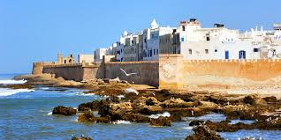

Destinations Populaires
Marrakech- La Ville Rouge

Souks colorés
Jamaa-el-Fna
Jardin Majorelle
Fès - La Capitale Spirituelle
Palais Royal(Dar el-Makhzen)
Université Al Quaraouiyine
Musée Nejjarine des Arts et Métiers du Bois
Chefchaouen
La Médina Bleu
La Place Outa El Hammam
La Cascade d'Akchour
Merzouga Et Le Désert Du Sahara
Les Dunes De l'Erg Chebbi
Lac De Dayet Srij
Les Villages Nomades Et Les Oasis
Casablanca-La Ville Moderne
La Mosquée Hassan 2
Le Quartier Habous(Nouvelle Médina)
La Corniche d'Ain Diab
Rabat-Capital
La Kasbah Des Oudayas
La Tour Hassan Et Le Mausolée Mohammed 5
La Médina De Rabat
Essaouira-La Perle De l'Atlantique
La Médina d'Essaouira
Le Porte d'Essaouira

La Plage d'Essaouira
Tanjer-La Porte De l'Europe
La Kasbah De Tanger
La Médina De Tanger
Les Grottes d'Hercule
Ouarzazate Et Ait Ben Haddou

La Kasbah d'Ait Ben Haddou
Les Studios De Cinéma Atlas
La Kasbah Taourirt
Les Gorges de Todgha Et Dadés

Les Gorges de Todgha
Les Routes Sinueuses Des Gorges De Dadés
Les Villages Berbères Traditionnels
Ifran-La Petit Suisse
Parc National d'Ifrane
Le Lions De Pierre
La Source Vitelle
Les Cascades d'Ouzoud
Les Cascades d'Ouzoud
Les Petites Grottes Et Piscine Naturelles
Les Villages Berbères
Les Plages d'Assilah
Les Plages d'Assilah
Les Remparts d'Assilah
La Médina d'Assilah
Expériences Culturelles
Riad et Hammam
Découvrez l'hospitalité marocaine et détendez-vous dans un hammam traditionnel.
Gastronomie
Goûtez aux saveurs authentiques du couscous, du tajine et du thé à la menthe.
Artisanat
Admirez les tapis, la poterie et les bijoux fabriqués à la main.